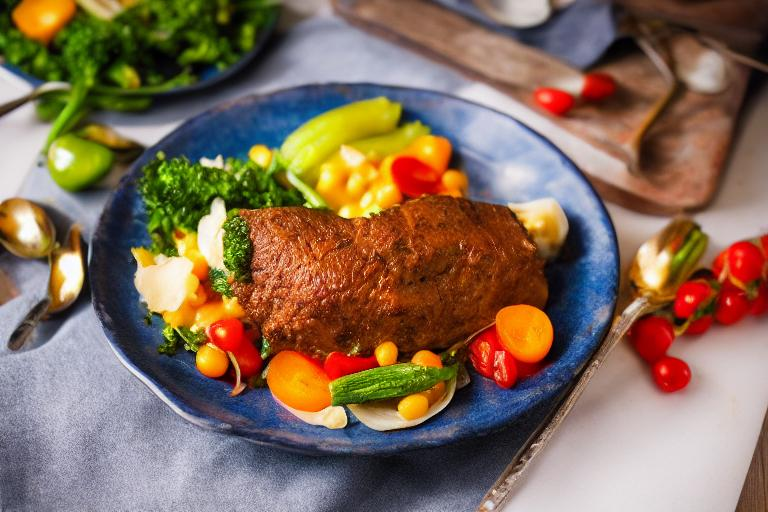

Conseils pour cuisiner en masse et réduire les coûts alimentaires

Cuisiner en grande quantité une ou deux fois par semaine réduit le coût des repas et le temps passé aux fourneaux. Voici comment procéder efficacement, et surtout en toute sécurité.
1. Choisissez des plats qui se conservent bien
Soupes, chilis, ragoûts, plats de lentilles, sauces tomate, riz, pâtes au four et currys se prêtent bien à la préparation à l'avance. Les légumineuses (lentilles, pois chiches, haricots) sont parmi les ingrédients les moins chers.
2. Planifiez et faites une liste
Décidez de deux ou trois recettes, notez les ingrédients, puis vérifiez ce que vous avez déjà. Comparez le prix au kilo ou à l'unité plutôt que le prix de l'emballage.
3. Cuisinez en une séance
Préparez les légumes d'un coup, lancez la cuisson d'un plat qui mijote pendant que vous en préparez un autre. Un grand faitout, un four et une mijoteuse permettent de gagner du temps.
4. Refroidissez vite
Ne laissez pas un grand pot de nourriture chaude refroidir pendant des heures sur la cuisinière. Répartissez-le dans des contenants peu profonds et mettez-les au réfrigérateur dans les deux heures.
5. Conservez et congelez correctement
- Au réfrigérateur, les plats cuits se gardent généralement deux à trois jours.
- Au congélateur, divisez en portions individuelles et inscrivez le nom du plat et la date.
- Décongelez au réfrigérateur et réchauffez à cœur, jusqu'à ce que le plat soit très chaud.
6. Cuisez bien la viande
La volaille doit atteindre 74 °C (165 °F) à cœur. Un thermomètre de cuisine est un petit achat très utile. Lavez-vous les mains et nettoyez les surfaces après avoir manipulé de la viande crue.
7. Variez pour ne pas vous lasser
Servez la même base de riz ou de pâtes avec des sauces différentes, ou ajoutez une garniture fraîche à chaque repas.
En cuisinant en masse, vous achetez en plus grandes quantités, gaspillez moins et mangez mieux tout au long de la semaine.
En tant que Partenaire Amazon, je réalise un bénéfice sur les achats remplissant les conditions requises.